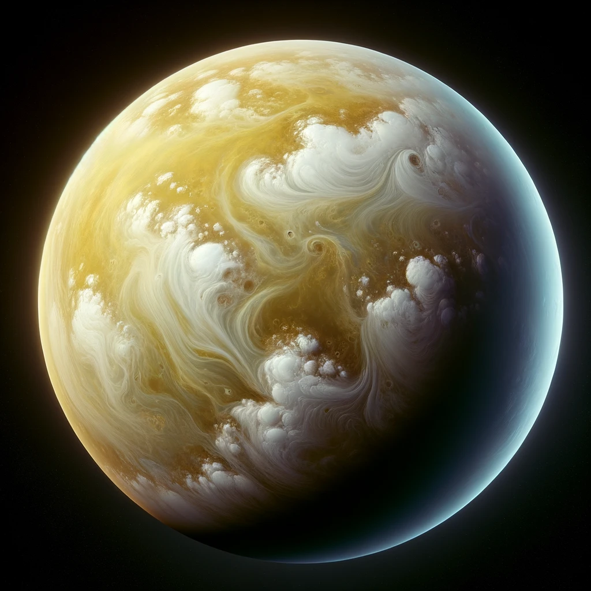
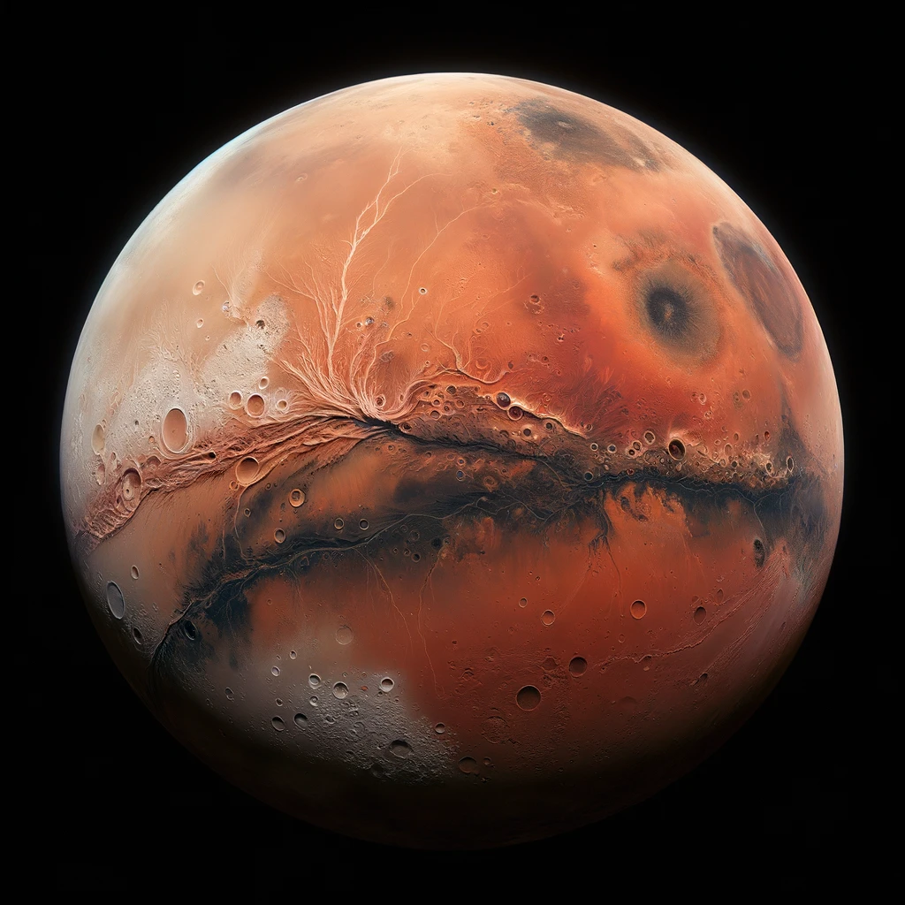
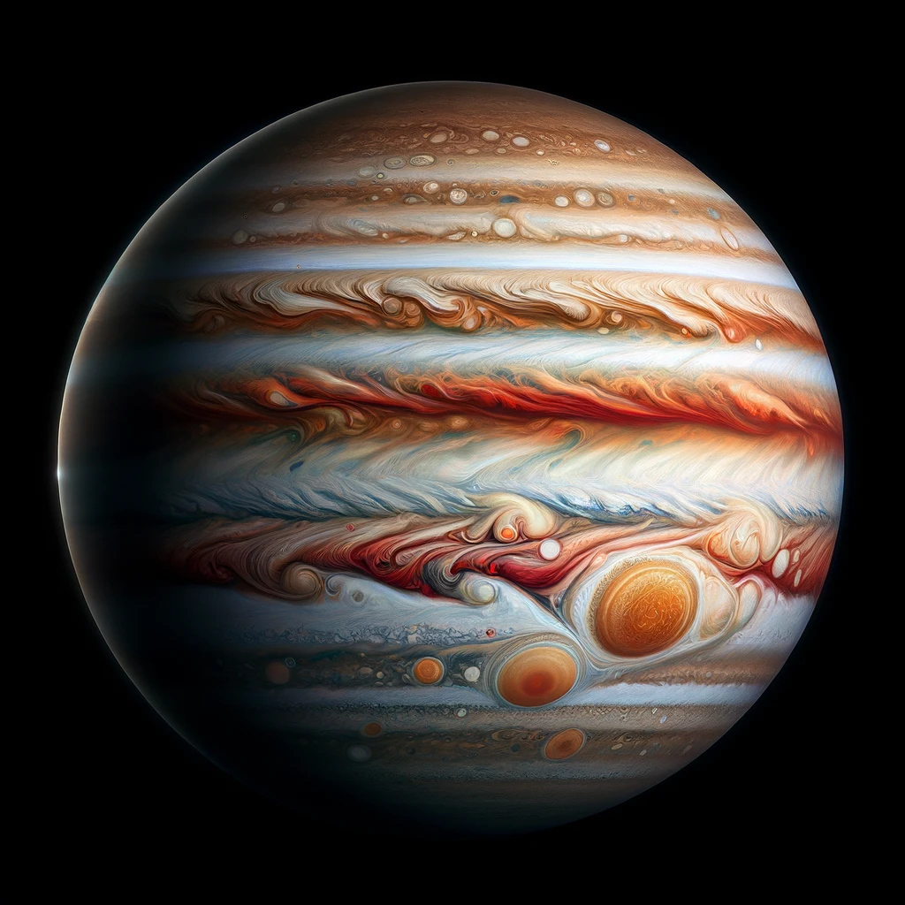
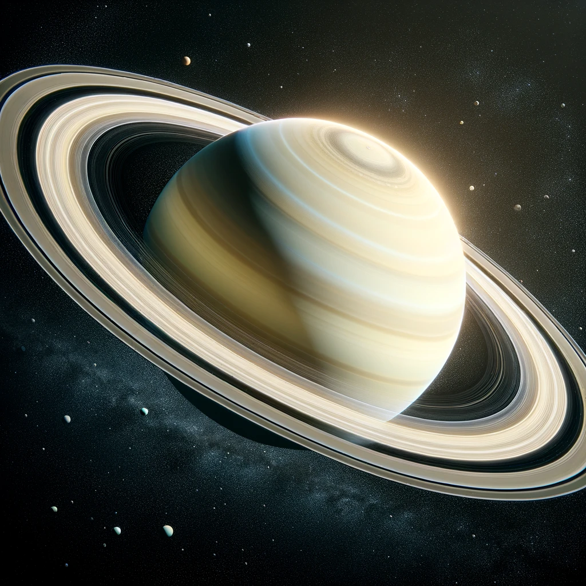
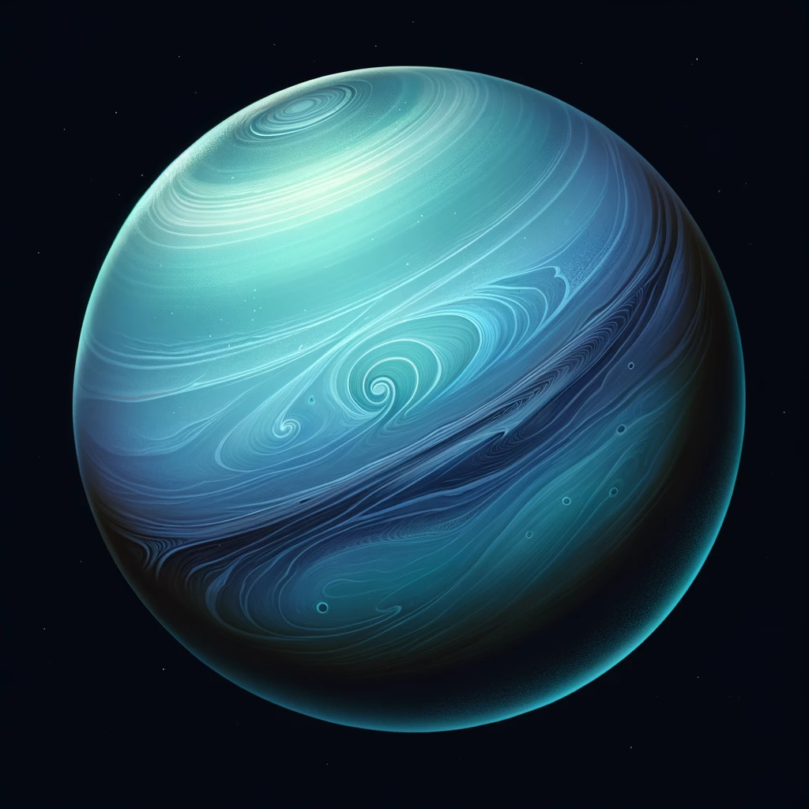
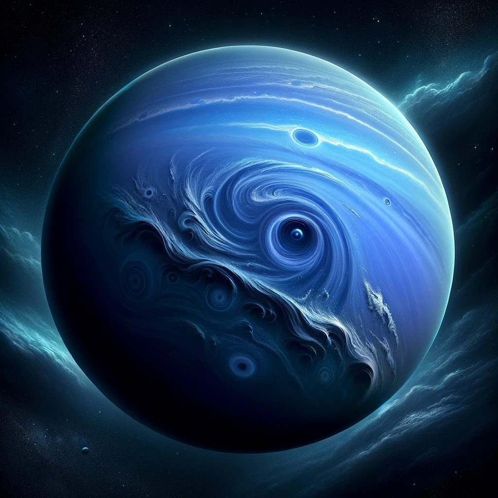

The closest planet to the Sun, Mercury boasts extreme temperatures ranging from scorching to freezing. It has a cratered surface due to impacts from asteroids and comets.

Venus
Venus is often called Earth's twin due to its similar size and composition. It's shrouded in thick clouds of sulfuric acid and experiences a runaway greenhouse effect, making it the hottest planet.
Earth
Earth is the only known planet to support life, featuring a diverse range of ecosystems and climates. Its atmosphere primarily consists of nitrogen and oxygen, crucial for sustaining life.

Mars
Mars, often called the Red Planet, exhibits evidence of past water flows and possibly harbored microbial life. It has polar ice caps and a thin atmosphere composed mainly of carbon dioxide.

Jupiter
Jupiter is the largest planet in our solar system, known for its iconic Great Red Spot, a giant storm. It's primarily composed of hydrogen and helium and has numerous moons, including the four Galilean moons.

Saturn
Saturn is famous for its stunning rings, made up of icy particles and debris. It's the second-largest planet and primarily consists of hydrogen and helium. Saturn has numerous moons, with Titan being the largest.

Uranus
Uranus is unique for its sideways rotation, likely due to a collision in its past. It's an icy giant composed of water, ammonia, and methane. Uranus has a faint ring system and a retinue of moons.

Neptune
Neptune, the furthest planet from the Sun, has a vivid blue coloration due to methane in its atmosphere. It has strong winds and a turbulent atmosphere, with the fastest winds in the solar system.